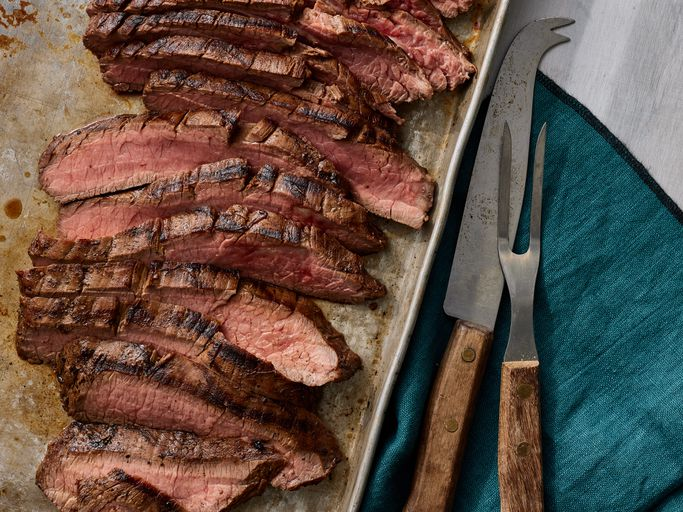

Marinated Flank Steak

Description
A complex, savory flank steak marinade ensures perfectly tender and juicy beef every time.
Ingrediants
- Half cup vegetable oil
- Third cup low-sodium soy sauce
- Quarter cup red wine vinegar
- Two tablespoons fresh lemon juice
- One and a half tablespoons Worcestershire sauce
- One tablespoon Dijon mustard
- Two cloves garlic, minced
- Half teaspoon ground black pepper
- A One and a half pound flank steak
Steps
- Gather all ingredients
- Whisk together oil, soy sauce, vinegar, lemon juice, Worcestershire sauce, Dijon mustard, garlic, and pepper for marinade until thoroughly combined. Place steak in a 9x13-inch glass baking dish
- Pour marinade over flank steak in the baking dish; turn several times to coat thoroughly with marinade. Cover, and refrigerate for 2 to 6 hours, or up to 12 hours if you have time
- When ready to cook, preheat an outdoor grill for medium-high heat and lightly oil the grate
- Remove steak from the marinade and shake off excess. Discard the remaining marinade
- Cook steak on the preheated grill for about 5 minutes per side, or to desired doneness
- Remove from the grill and let rest for 5 minutes before slicing and serving
- Serve hot and enjoy!
Home